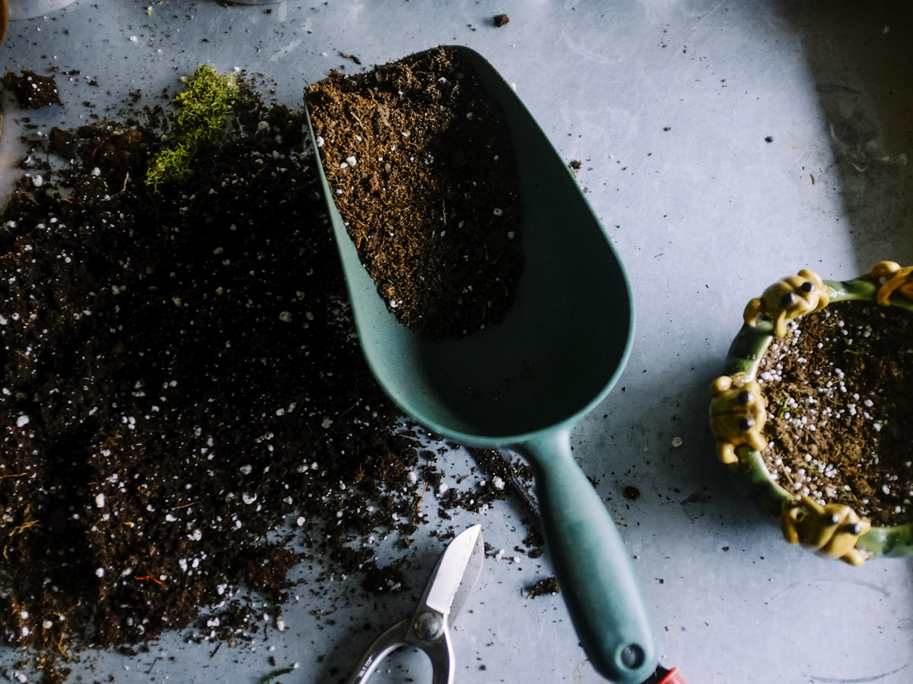
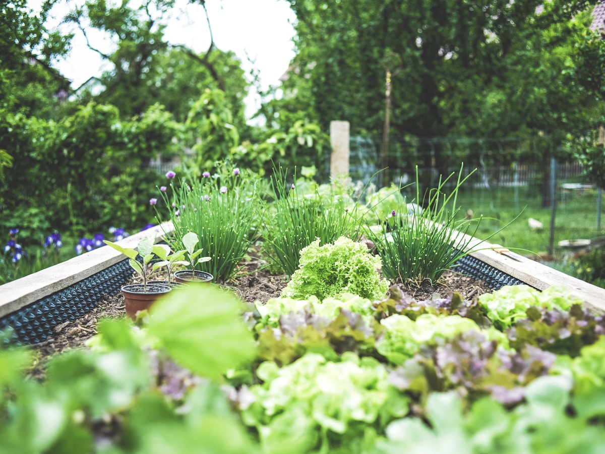

Remodeling
Kitchen, bathroom, and whole-home remodeling done right.

Serving Amsterdam and surrounding communities
Tree removal, trimming, and health care in Amsterdam, NY. Licensed arborists keeping your property safe and your trees thriving.
From the first call through cleanup, every detail is handled with the same standard.
Kitchen, bathroom, and whole-home remodeling done right.
Home additions and extensions built to match your existing space.
Basement finishing, waterproofing, and conversion.
Custom deck design and construction for outdoor living.
Foundation repair, crack sealing, and new concrete pours.
Full-service general contracting for residential projects.
Clean work, professional crews, and results built to hold up.


Direct answers, a clear next step, and no runaround.
Here are the answers customers ask for most often.
Yes, we provide free, no-obligation estimates for all tree service services.
Absolutely. We are fully licensed, bonded, and insured for your protection.
We serve Amsterdam, Johnstown, Gloversville, Scotia, Schenectady, and surrounding communities in NY.
We offer same-day and 24/7 emergency service for urgent issues.
Yes, we stand behind every job with a 100% satisfaction guarantee.
Talk directly with Alteris Tree Service & Snow Plowing and get the next step moving.